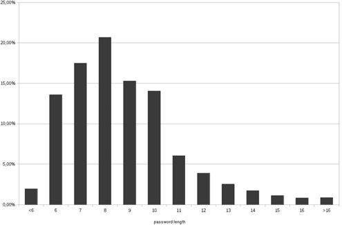
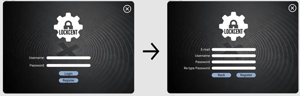
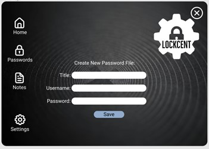
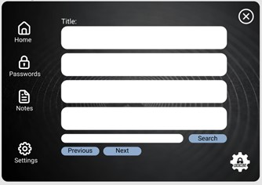
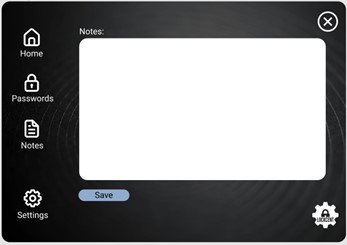
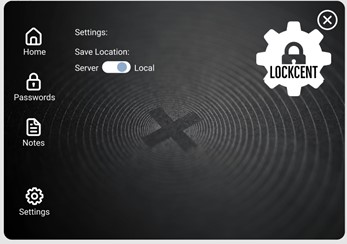

LockCent is an Application that keeps your personal information safe. It provides data encryption and local or cloud saving.
In the era of modern technologies, we have a handful amount of choices where we search useful data, where we buy real/digital goods, where we share information with our friends and families. Most of these applications and services require some type of authentication to secure user data. Using the same password for everything is a bad choice, so people tend to create very challenging passwords and usernames to save their data. Remembering all of them is tough. For example, research by a Polish Dr. of Cyber Security shows that the most popular length of passwords among people is 8 characters.
These types of passwords are highly predictable. So, some of the services started to increase the minimum limit of the password length. This decision lead to another problem, people started to use similar patterns. According to Microsoft research on passwords, “Excessive length requirements (greater than about 10 characters) can result in user behavior that is predictable and undesirable. For example, users who are required to have a 16-character password may choose repeating patterns like fourfourfourfour or passwordpassword that meet the character length requirement but are clearly not hard to guess.”
Providing solutions that will help people to memorize passwords better and, besides, will encourage them to make stronger ones - is our main goal.
So we thought a program that can store all the data in one place would be a solution to a problem.
Program Layout:
I. The access to user data and passwords are protected by user and password authentication.
After getting access to an account user sees the main page with an interactive menu that includes other pages of the program.
II. The “Main” Page also includes a form to add a new password to the list.
III. The “Passwords” page includes the list of all user’s passwords on his/her account and a search bar to quickly find a password in the database.
IV. The “Notes” page includes a form with plain user-provided text that is encrypted by an application.
V. The “Settings” page includes all the controls related to application functionality.
